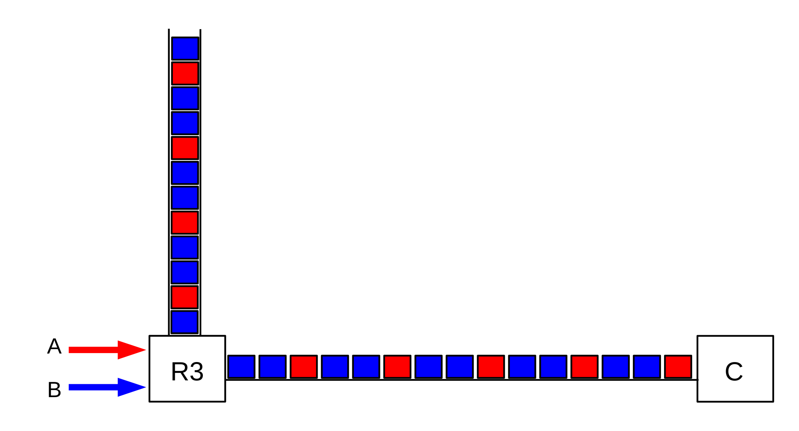
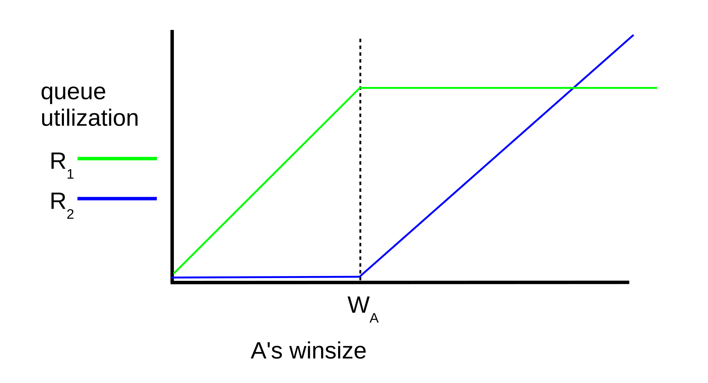
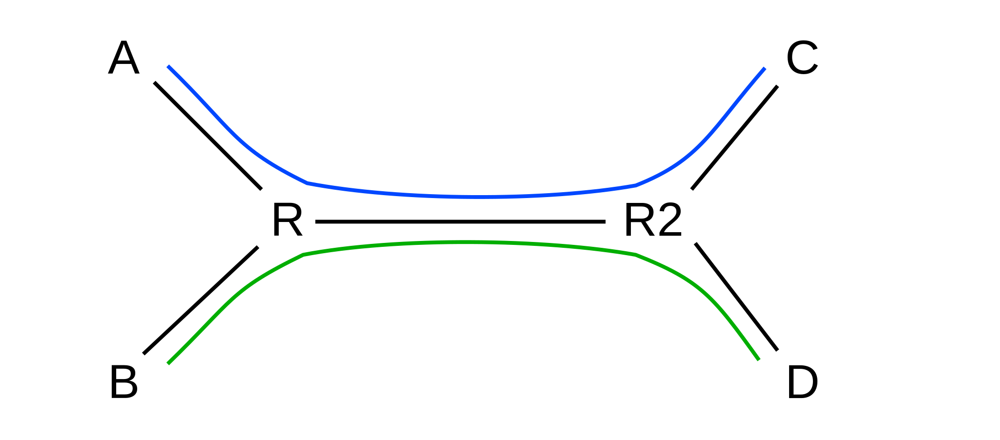

20 Dynamics of TCP¶
In this chapter we introduce, first and foremost, the possibility that there are other TCP connections out there competing with us for throughput. In 8.3 Linear Bottlenecks (and in 19.7 TCP and Bottleneck Link Utilization) we looked at the performance of TCP through an uncontested bottleneck; now we allow for competition.
Although the focus of this chapter is on TCP Reno, many, though not all, of the ideas presented here apply to non-Reno TCPs as well, and even to non-TCP mechanisms such as QUIC. Several non-Reno TCP alternatives are presented later in 22 Newer TCP Implementations.
The following chapter continues this thread, with some more examples of TCP-Reno large-scale behavior.
20.1 A First Look At Queuing¶
In what order do we transmit the packets in a router’s outbound-interface queue? The conventional answer is in the order of arrival; technically, this is FIFO (First-In, First-Out) queuing. What happens to a packet that arrives at a router whose queue for the desired outbound interface is full? The conventional answer is that it is dropped; technically, this is known as tail-drop.
While FIFO tail-drop remains very important, there are alternatives. In an admittedly entirely different context (the IPv6 equivalent of ARP), RFC 4681 states, “When a queue overflows, the new arrival SHOULD replace the oldest entry.” This might be called “head drop”; it is not used for router queues.
An alternative drop-policy mechanism that has been considered for router queues is random drop. Under this policy, if a packet arrives but the destination queue is full, with N packets waiting, then one of the N+1 packets in all – the N waiting plus the new arrival – is chosen at random for dropping. The most recent arrival has thus a very good chance of gaining an initial place in the queue, but also a reasonable chance of being dropped later on. See [AM90].
While random drop is seldom if ever put to production use its original form, it does resolve a peculiar synchronization problem related to TCP’s natural periodicity that can lead to starvation for one connection. This situation – known as phase effects – will be revisited in 31.3.4 Phase Effects. Mathematically, random-drop queuing is sometimes more tractable than tail-drop because a packet’s loss probability has little dependence on arrival-time race conditions with other packets.
20.1.1 Priority Queuing¶
A quite different alternative to FIFO is priority queuing. We will consider this in more detail in 23.3 Priority Queuing, but the basic idea is straightforward: whenever the router is ready to send the next packet, it looks first to see if it has any higher-priority packets to send; lower-priority packets are sent only when there is no waiting higher-priority traffic. This can, of course, lead to complete starvation for the lower-priority traffic, but often there are bandwidth constraints on the higher-priority traffic (eg that it amounts to less than 10% of the total available bandwidth) such that starvation does not occur.
In an environment of mixed real-time and bulk traffic, it is natural to use priority queuing to give the real-time traffic priority service, by assignment of such traffic to the higher-priority queue. This works quite well as long as, say, the real-time traffic is less than some fixed fraction of the total; we will return to this in 25 Quality of Service.
20.2 Bottleneck Links with Competition¶
So far we have been ignoring the fact that there are other TCP connections out there. A single connection in isolation needs not to overrun its bottleneck router and drop packets, at least not too often. However, once there are other connections present, then each individual TCP connection also needs to consider how to maximize its share of the aggregate bandwidth.
Consider a simple network path, with bandwidths shown in packets/ms. The minimum bandwidth, or path bandwidth, is 3 packets/ms.
20.2.1 Example 1: linear bottleneck¶
Below is the example we considered in 8.3 Linear Bottlenecks; bandwidths are shown in packets/ms.

The bottleneck link for A→B traffic is at R2, and the queue will form at R2’s outbound interface.
We claimed earlier that if the sender uses sliding windows with a fixed window size, then the network will converge to a steady state in relatively short order. This is also true if multiple senders are involved; however, a mathematical proof of convergence may be more difficult.
20.2.2 Example 2: router competition¶
The bottleneck-link concept is a useful one for understanding congestion due to a single connection. However, if there are multiple senders in competition for a link, the situation is more complicated. Consider the following diagram, in which links are labeled with bandwidths in packets/ms:
For a moment, assume R3 uses priority queuing, with the B⟶C path given priority over A⟶C. If B’s flow to C is fixed at 3 packets/ms, then A’s share of the R3–C link will be 1 packet/ms, and A’s bottleneck will be at R3. However, if B’s total flow rate drops to 1 packet/ms, then the R3–C link will have 3 packets/ms available, and the bottleneck for the A–C path will become the 2 packet/ms R1–R3 link.
Now let us switch to the more-realistic FIFO queuing at R3. If B’s flow is 3 packets/ms and A’s is 1 packet/ms, then the R3–C link will be saturated, but just barely: if each connection sticks to these rates, no queue will develop at R3. However, it is no longer accurate to describe the 1 packet/ms as A’s share: if A wishes to send more, it will begin to compete with B. At first, the queue at R3 will grow; eventually, it is quite possible that B’s total flow rate might drop because B is losing to A in the competition for R3’s queue. This latter effect is very real.
In general, if two connections share a bottleneck link, they are competing for the bandwidth of that link. That bandwidth share, however, is precisely dictated by the queue share as of a short while before. R3’s fixed rate of 4 packets/ms means one packet every 250 µs. If R3 has a queue of 100 packets, and in that queue there are 37 packets from A and 63 packets from B, then over the next 25 ms (= 100 × 250 µs) R3’s traffic to C will consist of those 37 packets from A and the 63 from B. Thus the competition between A and B for R3–C bandwidth is first fought as a competition for R3’s queue space. This is important enough to state as as rule:
Queue-Competition Rule: in the steady state, if a connection utilizes fraction 𝛼≤1 of a FIFO router’s queue, then that connection has a share of 𝛼 of the router’s total outbound bandwidth.
Below is a picture of R3’s queue and outbound link; the queue contains four packets from A and eight from B. The link, too, contains packets in this same ratio; presumably packets from B are consistently arriving twice as fast as packets from A.

In the steady state here, A and B will use four and eight packets, respectively, of R3’s queue capacity. As acknowledgments return, each sender will replenish the queue accordingly. However, it is not in A’s long-term interest to settle for a queue utilization at R3 of four packets; A may want to take steps that will lead in this setting to a gradual increase of its queue share.
Although we started the discussion above with fixed packet-sending rates for A and B, in general this leads to instability. If A and B’s combined rates add up to more than 4 packets/ms, R3’s queue will grow without bound. It is much better to have A and B use sliding windows, and give them each fixed window sizes; in this case, as we shall see, a stable equilibrium is soon reached. Any combination of window sizes is legal regardless of the available bandwidth; the queue utilization (and, if necessary, the loss rate) will vary as necessary to adapt to the actual bandwidth.
If there are several competing flows, then a given connection may have multiple bottlenecks, in the sense that there are several routers on the path experiencing queue buildups. In the steady state, however, we can still identify the link (or first link) with minimum bandwidth; we can call this link the bottleneck. Note that the bottleneck link in this sense can change with the sender’s winsize and with competing traffic.
20.2.3 Example 3: competition and queue utilization¶
In the next diagram, the bottleneck R–C link has a normalized bandwidth of 1 packet per ms (or, more abstractly, one packet per unit time). The bandwidths of the A–R and B–R links do not matter, except they are greater than 1 packet per ms. Each link is labeled with the propagation delay, measured in the same time unit as the bandwidth; the delay thus represents the number of packets the link can be transporting at the same time, if sent at the bottleneck rate.
The network layout here, with the shared R–C link as the bottleneck, is sometimes known as the singlebell topology. A perhaps-more-common alternative is the dumbbell topology of 20.3 TCP Reno Fairness with Synchronized Losses, though the two are equivalent for our purposes.
Suppose A and B each send to C using sliding windows, each with fixed values of winsize wA and wB. Suppose further that these winsize values are large enough to saturate the R–C link. How big will the queue be at R? And how will the bandwidth divide between the A⟶C and B⟶C flows?
For the two-competing-connections example above, assume we have reached the steady state. Let 𝛼 denote the fraction of the bandwidth that the A⟶C connection receives, and let 𝛽 = 1-𝛼 denote the fraction that the B⟶C connection gets; because of our normalization choice for the R–C bandwidth, 𝛼 and 𝛽 also represent respective throughputs. From the Queue-Competition Rule above, these bandwidth proportions must agree with the queue proportions; if Q denotes the combined queue utilization of both connections, then that queue will have about 𝛼Q packets from the A⟶C flow and about 𝛽Q packets from the B⟶C flow.
We worked out the queue usage precisely in 8.3.2 RTT Calculations for a single flow; we derived there the following:
queue_usage = winsize − throughput × RTTnoLoad
where we have here used “throughput” instead of “bandwidth” to emphasize that this is the dynamic share rather than the physical transmission capacity.
This equation remains true for each separate flow in the present case, where the RTTnoLoad for the A⟶C connection is 2(dA+d) (the factor of 2 is to account for the round-trip) and the RTTnoLoad for the B⟶C connection is 2(dB+d). We thus have
𝛼Q = wA − 2𝛼(dA+d)
𝛽Q = wB − 2𝛽(dB+d)
or, alternatively,
𝛼[Q + 2d + 2dA] = wA
𝛽[Q + 2d + 2dB] = wB
If we add the first pair of equations above, we can obtain the combined queue utilization:
Q = wA + wB − 2d − 2(𝛼dA+𝛽dB)
The last term here, 2(𝛼dA+𝛽dB), represents the number of A’s packets in flight on the A–R link plus the number of B’s packets in flight on the B–R link.
We can solve these equations exactly for 𝛼, 𝛽 and Q in terms of the known quantities, but the algebraic solution is not particularly illuminating. Instead, we examine a few more-tractable special cases.
20.2.3.1 The equal-delays case¶
We consider first the special case of equal delays: dA = dB = d’. In this case the term (𝛼dA+𝛽dB) simplifies to d’, and thus we have Q = wA + wB − 2d − 2d’. Furthermore, if we divide corresponding sides of the second pair of equations above, we get 𝛼/𝛽 = wA/wB; that is, the bandwidth (and thus the queue utilization) divides in exact accordance to the window-size proportions.
If, however, dA is larger than dB, then a greater fraction of the A⟶C packets will be in transit, and so fewer will be in the queue at R, and so 𝛼 will be somewhat smaller and 𝛽 somewhat larger.
20.2.3.2 The equal-windows case¶
If we assume equal winsize values instead, wA = wB = w, then we get
𝛼/𝛽 = [Q + 2d + 2dB] / [Q + 2d + 2dA]
The bandwidth ratio here is biased against the larger of dA or dB. That is, if dA > dB, then more of A’s packets will be in transit, and thus fewer will be in R’s queue, and so A will have a smaller fraction of the the bandwidth. This bias is, however, not quite proportional: if we assume dA is double dB and dB = d = Q/2, then 𝛼/𝛽 = 3/4, and A gets 3/7 of the bandwidth to B’s 4/7.
Still assuming wA = wB = w, let us decrease w to the point where the link is just saturated, but Q=0. At this point 𝛼/𝛽 = [d+dB]/[d +dA]; that is, bandwidth divides according to the respective RTTnoLoad values. As w rises, additional queue capacity is used and 𝛼/𝛽 will move closer to 1.
20.2.3.3 The fixed-wB case¶
Finally, let us consider what happens if wB is fixed at a large-enough value to create a queue at R from the B–C traffic alone, while wA then increases from zero to a point much larger than wB. Denote the number of B’s packets in R’s queue by QB; with wA = 0 we have 𝛽=1 and Q = QB = wB − 2(dB+d) = throughput × (RTT − RTTnoLoad).
As wA begins to increase from zero, the competition will decrease B’s throughput. We have 𝛼 = wA/[Q+2d+2dA]; small changes in wA will not lead to much change in Q, and even less in Q+2d+2dA, and so 𝛼 will initially be approximately proportional to wA.
For B’s part, increased competition from A (increased wA) will always decrease B’s share of the bottleneck R–C link; this link is saturated and every packet of A’s in transit there must take away one slot on that link for a packet of B’s. This in turn means that B’s bandwidth 𝛽 must decrease as wA rises. As B’s bandwidth decreases, QB = 𝛽Q = wB − 2𝛽(dB+d) must increase; another way to put this is as the transit capacity falls, the queue utilization rises. For QB = 𝛽Q to increase while 𝛽 decreases, Q must be increasing faster than 𝛽 is decreasing.
Finally, we can conclude that as wA gets large and 𝛽→0, the limiting value for B’s queue utilization QB at R will be the entire windowful wB, up from its starting value (when wA=0) of wB − 2(dB+d). If dB+d had been small relative to wB, then QB’s increase will be modest, and it may be appropriate to consider QB relatively constant.
We remark again that the formulas here are based on the assumption that the bottleneck bandwidth is one packet per unit time; see exercise 1.0 for the necessary adjustments for conventional bandwidth measurements.
20.2.3.4 The iterative solution¶
Given d, dA, dB, wA and wB, one way to solve for 𝛼, 𝛽 and Q is to proceed iteratively. Suppose an initial ⟨𝛼,𝛽⟩ is given, as the respective fractions of packets in the queue at R. Over the next period of time, 𝛼 and 𝛽 must (by the Queue Rule) become the bandwidth ratios. If the A–C connection has bandwidth 𝛼 (recall that the R–C connection has bandwidth 1.0, in packets per unit time, so a bandwidth fraction of 𝛼 means an actual bandwidth of 𝛼), then the number of packets in bidirectional transit will be 2𝛼(dA+d), and so the number of A–C packets in R’s queue will be QA = wA − 2𝛼(dA+d); similarly for QB. At that point we will have 𝛼new = QA/(QA+QB). Starting with an appropriate guess for 𝛼 and iterating 𝛼 → 𝛼new a few times, if the sequence converges then it will converge to the steady-state solution. Convergence is not guaranteed, however, and is dependent on the initial guess for 𝛼. One guess that often leads to convergence is wA/(wA+wB).
20.2.4 Example 4: cross traffic and RTT variation¶
In the following diagram, let us consider what happens to the A–B traffic when the C⟶D link ramps up. Bandwidths shown are expressed as packets/ms and all queues are FIFO. (Because the bandwidth is not equal to 1.0, we cannot apply the formulas of the previous section directly.) We will assume that propagation delays are small enough that only an inconsequential number of packets from C to D can be simultaneously in transit at the bottleneck rate of 5 packets/ms. All senders will use sliding windows.
Let us suppose the A–B link is idle, and the C⟶D connection begins sending with a window size chosen so as to create a queue of 30 of C’s packets at R1 (if propagation delays are such that two packets can be in transit each direction, we would achieve this with winsize=34).
Now imagine A begins sending. If A sends a single packet, is not shut out even though the R1–R2 link is 100% busy. A’s packet will simply have to wait at R1 behind the 30 packets from C; the waiting time in the queue will be 30 packets ÷ (5 packets/ms) = 6 ms. If we change the winsize of the C⟶D connection, the delay for A’s packets will be directly proportional to the number of C’s packets in R1’s queue.
To most intents and purposes, the C⟶D flow here has increased the RTT of the A⟶B flow by 6 ms. As long as A’s contribution to R1’s queue is small relative to C’s, the delay at R1 for A’s packets looks more like propagation delay than bandwidth delay, because if A sends two back-to-back packets they will likely be enqueued consecutively at R1 and thus be subject to a single 6 ms queuing delay. By varying the C⟶D window size, we can, within limits, increase or decrease the RTT for the A⟶B flow.
Let us return to the fixed C⟶D window size – denoted wC – chosen to yield a queue of 30 of C’s packets at R1. As A increases its own window size from, say, 1 to 5, the C⟶D throughput will decrease slightly, but C’s contribution to R1’s queue will remain dominant.
As in the argument at the end of 20.2.3.3 The fixed-wB case, small propagation delays mean that wC will not be much larger than 30. As wA climbs from zero to infinity, C’s contribution to R1’s queue rises from 30 to at most wC, and so the 6ms delay for A⟶B packets remains relatively constant even as A’s winsize rises to the point that A’s contribution to R1’s queue far outweighed C’s. (As we will argue in the next paragraphs, this can actually happen only if the R2–R3 bandwidth is increased). Each packet from A arriving at R1 will, on average, face 30 or so of C’s packets ahead of it, along with anywhere from many fewer to many more of A’s packets.
If A’s window size is 1, its one packet at a time will wait 6 ms in the queue at R1. If A’s window size is greater than 1 but remains small, so that A contributes only a small proportion of R1’s queue, then A’s packets will wait only at R1. Initially, as A’s winsize increases, the queue at R1 grows but all other queues remain empty.
However, if A’s winsize grows large enough that its packets consume 40% of R1’s queue in the steady state, then this situation changes. At the point when A has 40% of R1’s queue, by the Queue Competition Rule it will also have a 40% share of the R1–R2 link’s bandwidth, that is, 40% × 5 = 2 packets/ms. Because the R2–R3 link has a bandwidth of 2 packets/ms, the A–B throughput can never grow beyond this. If the C–D contribution to R1’s queue is held constant at 30 packets, then this point is reached when A’s contribution to R1’s queue is 20 packets.
Because A’s proportional contribution to R1’s queue cannot increase further, any additional increase to A’s winsize must result in those packets now being enqueued at R2.
We have now reached a situation where A’s packets are queuing up at both R1 and at R2, contrary to the single-sender principle that packets can queue at only one router. Note, however, that for any fixed value of A’s winsize, a small-enough increase in A’s winsize will result in either that increase going entirely to R1’s queue or entirely to R2’s queue. Specifically, if wA represents A’s winsize at the point when A has 40% of R1’s queue (a little above 20 packets if propagation delays are small), then for winsize < wA any queue growth will be at R1 while for winsize > wA any queue growth will be at R2. In a sense the bottleneck link “switches” from R1–R2 to R2–R3 at the point winsize = wA.
In the graph below, A’s contribution to R1’s queue is plotted in green and A’s contribution to R2’s queue is in blue. It may be instructive to compare this graph with the third graph in 8.3.3 Graphs at the Congestion Knee, which illustrates a single connection with a single bottleneck.

In Exercise 8.0 we consider some minor changes needed if propagation delay is not inconsequential.
20.2.5 Example 5: dynamic bottlenecks¶
The next example has two links offering potential competition to the A⟶B flow: C⟶D and E⟶F. Either of these could send traffic so as to throttle (or at least compete with) the A⟶B traffic. Either of these could choose a window size so as to build up a persistent queue at R1 or R3; a persistent queue of 20 packets would mean that A⟶B traffic would wait 4 ms in the queue.
Despite situations like this, we will usually use the term “bottleneck link” as if it were a precisely defined concept. In Examples 2, 3 and 4 above, a better term might be “competitive link”; for Example 5 we perhaps should say “competitive links.
20.2.6 Packet Pairs¶
One approach for a sender to attempt to measure the physical bandwidth of the bottleneck link is the packet-pairs technique: the sender repeatedly sends a pair of packets P1 and P2 to the receiver, one right after the other. The receiver records the time difference between the arrivals.
Sooner or later, we would expect that P1 and P2 would arrive consecutively at the bottleneck router R, and be put into the queue next to each other. They would then be sent one right after the other on the bottleneck link; if T is the time difference in arrival at the far end of the link, the physical bandwidth is size(P1)/T. At least some of the time, the packets will remain spaced by time T for the rest of their journey.
The theory is that the receiver can measure the different arrival-time differences for the different packet pairs, and look for the minimum time difference. Often, this will be the time difference introduced by the bandwidth delay on the bottleneck link, as in the previous paragraph, and so the ultimate receiver will be able to infer that the bottleneck physical bandwidth is size(P1)/T.
Two things can mar this analysis. First, packets may be reordered; P2 might arrive before P1. Second, P1 and P2 can arrive together at the bottleneck router and be sent consecutively, but then, later in the network, the two packets can arrive at a second router R2 with a (transient) queue large enough that P2 arrives while P1 is in R2’s queue. If P1 and P2 are consecutive in R2’s queue, then the ultimate arrival-time difference is likely to reflect R2’s (higher) outbound bandwidth rather than R’s.
Additional analysis of the problems with the packet-pair technique can be found in [VP97], along with a proposal for an improved technique known as packet bunch mode.
20.3 TCP Reno Fairness with Synchronized Losses¶
This brings us to the question of just what is a “fair” division of bandwidth. A starting place is to assume that “fair” means “equal”, though, as we shall see below, the question does not end there.
For the moment, consider again two competing TCP Reno connections: Connection 1 (in blue) from A to C and Connection 2 (in green) from B to D, through the same bottleneck router R, and with the same RTT. The router R will use tail-drop queuing.

The layout illustrated here, with the shared link somewhere in the middle of each path, is sometimes known as the dumbbell topology.
For the time being, we will also continue to assume the TCP Reno synchronized-loss hypothesis: that in any one RTT either both connections experience a loss or neither does. (This assumption is suspect; we explore it further in 20.3.3 TCP Reno RTT bias and in 31.3 Two TCP Senders Competing). This was the model reviewed previously in 19.1.1.1 A first look at fairness; we argued there that in any RTT without a loss, the expression (cwnd1 - cwnd2) remained the same (both cwnds incremented by 1), while in any RTT with a loss the expression (cwnd1 - cwnd2) decreased by a factor of 2 (both cwnds decreased by factors of 2).
Here is a graphical version of the same argument, as originally introduced in [CJ89]. We plot cwnd1 on the x-axis and cwnd2 on the y-axis. An additive increase of both (in equal amounts) moves the point (x,y) = (cwnd1,cwnd2) along the line parallel to the 45° line y=x; equal multiplicative decreases of both moves the point (x,y) along a line straight back towards the origin. If the maximum network capacity is Max, then a loss occurs whenever x+y exceeds Max, that is, the point (x,y) crosses the line x+y=Max.
Beginning at the initial state, additive increase moves the state at a 45° angle up to the line x+y=Max, in small increments denoted by the small arrowheads. At this point a loss would occur, and the state jumps back halfway towards the origin. The state then moves at 45° incrementally back to the line x+y=Max, and continues to zigzag slowly towards the equal-shares line y=x.
Any attempt to increase cwnd faster than linear will mean that the increase phase is not parallel to the line y=x, but in fact veers away from it. This will slow down the process of convergence to equal shares.
Finally, here is a timeline version of the argument. We will assume that the A–C path capacity, the B–D path capacity and R’s queue size all add up to 24 packets, and that in any RTT in which cwnd1 + cwnd2 > 24, both connections experience a packet loss. We also assume that, initially, the first connection has cwnd=20, and the second has cwnd=1.
| T | A–C | B–D | |
|---|---|---|---|
| 0 | 20 | 1 | |
| 1 | 21 | 2 | |
| 2 | 22 | 3 | total cwnd is 25; packet loss |
| 3 | 11 | 1 | |
| 4 | 12 | 2 | |
| 5 | 13 | 3 | |
| 6 | 14 | 4 | |
| 7 | 15 | 5 | |
| 8 | 16 | 6 | |
| 9 | 17 | 7 | |
| 10 | 18 | 8 | second packet loss |
| 11 | 9 | 4 | |
| 12 | 10 | 5 | |
| 13 | 11 | 6 | |
| 14 | 12 | 7 | |
| 15 | 13 | 8 | |
| 16 | 14 | 9 | |
| 17 | 15 | 10 | third packet loss |
| 18 | 7 | 5 | |
| 19 | 8 | 6 | |
| 20 | 9 | 7 | |
| 21 | 10 | 8 | |
| 22 | 11 | 9 | |
| 23 | 12 | 10 | |
| 24 | 13 | 11 | |
| 25 | 14 | 12 | fourth loss |
| 26 | 7 | 6 | cwnds are quite close |
| … | |||
| 32 | 13 | 12 | loss |
| 33 | 6 | 6 | cwnds are equal |
So far, fairness seems to be winning.
20.3.1 Example 2: Faster additive increase¶
Here is the same kind of timeline – again with the synchronized-loss hypothesis – but with the additive-increase increment changed from 1 to 2 for the B–D connection (but not for A–C); both connections start with cwnd=1. Again, we assume a loss occurs when cwnd1 + cwnd2 > 24
| T | A–C | B–D | |
|---|---|---|---|
| 0 | 1 | 1 | |
| 1 | 2 | 3 | |
| 2 | 3 | 5 | |
| 3 | 4 | 7 | |
| 4 | 5 | 9 | |
| 5 | 6 | 11 | |
| 6 | 7 | 13 | |
| 7 | 8 | 15 | |
| 8 | 9 | 17 | first packet loss |
| 9 | 4 | 8 | |
| 10 | 5 | 10 | |
| 11 | 6 | 12 | |
| 12 | 7 | 14 | |
| 13 | 8 | 16 | |
| 14 | 9 | 18 | second loss |
| 15 | 4 | 9 | essentially where we were at T=9 |
The effect here is that the second connection’s average cwnd, and thus its throughput, is double that of the first connection. Thus, changes to the additive-increase increment lead to very significant changes in fairness. In general, an additive-increase value of 𝛼 increases throughput, relative to TCP Reno, by a factor of 𝛼.
20.3.2 Example 3: Longer RTT¶
For the next example, we will return to standard TCP Reno, with an increase increment of 1. But here we assume that the RTT of the A–C connection is double that of the B–D connection, perhaps because of additional delay in the A–R link. The longer RTT means that the first connection sends packet flights only when T is even. Here is the timeline, where we allow the first connection a hefty head-start. As before, we assume a loss occurs when cwnd1 + cwnd2 > 24.
| T | A–C | B–D | |
|---|---|---|---|
| 0 | 20 | 1 | |
| 1 | 2 | ||
| 2 | 21 | 3 | |
| 3 | 4 | ||
| 4 | 22 | 5 | first loss |
| 5 | 2 | ||
| 6 | 11 | 3 | |
| 7 | 4 | ||
| 8 | 12 | 5 | |
| 9 | 6 | ||
| 10 | 13 | 7 | |
| 11 | 8 | ||
| 12 | 14 | 9 | |
| 13 | 10 | ||
| 14 | 15 | 11 | second loss |
| 15 | 5 | ||
| 16 | 7 | 6 | |
| 17 | 7 | ||
| 18 | 8 | 8 | B–D has caught up |
| 20 | 9 | 10 | from here on only even values for T shown |
| 22 | 10 | 12 | |
| 24 | 11 | 14 | third loss |
| 26 | 5 | 8 | B–D is now ahead |
| 28 | 6 | 10 | |
| 30 | 7 | 12 | |
| 32 | 8 | 14 | |
| 34 | 9 | 16 | fourth loss |
| 35 | 8 | ||
| 36 | 4 | 9 | |
| 38 | 5 | 11 | |
| 40 | 6 | 13 | |
| 42 | 7 | 15 | |
| 44 | 8 | 17 | fifth loss |
| 45 | 8 | ||
| 46 | 4 | 9 | exactly where we were at T=36 |
The interval 36≤T<46 represents the steady state here; the first connection’s average cwnd is 6 while the second connection’s average is (8+9+…+16+17)/10 = 12.5. Worse, the first connection sends a windowful only half as often. In the interval 36≤T<46 the first connection sends 4+5+6+7+8 = 30 packets; the second connection sends 125. The cost of the first connection’s longer RTT is quadratic; in general, as we argue more formally below, if the first connection has RTT = 𝜆 > 1 relative to the second’s, then its bandwidth will be reduced by a factor of 1/𝜆2.
Is this fair?
Early thinking was that there was something to fix here; see [F91] and [FJ92], §3.3 where the Constant-Rate window-increase algorithm is discussed. A more recent attempt to address this problem is TCP Hybla, [CF04]; discussed later in 22.12 TCP Hybla.
Alternatively, we may simply define TCP Reno’s bandwidth allocation as “fair”, at least in some contexts. This approach is particularly common when the issue at hand is making sure other TCP implementations – and non-TCP flows – compete for bandwidth in roughly the same way that TCP Reno does. While TCP Reno’s strategy is now understood to be “greedy” in some respects, “fixing” it in the Internet at large is generally recognized as a very difficult option.
20.3.3 TCP Reno RTT bias¶
Let us consider more carefully the way TCP allocates bandwidth between two connections sharing a bottleneck link with relative RTTs of 1 and 𝜆>1. We claimed above that the slower connection’s bandwidth will be reduced by a factor of 1/𝜆2; we will now show this under some assumptions. First, uncontroversially, we will assume FIFO droptail queuing at the bottleneck router, and also that the network ceiling (and hence cwnd at the point of loss) is “sufficiently” large. We will also assume, for simplicity, that the network ceiling C is constant.
We need one more assumption: that most loss events are experienced by both connections. This is the synchronized losses hypothesis, and is the most debatable; we will explore it further in the next section. But first, here is the general argument with this assumption.
Let connection 1 be the faster connection, and assume a steady state has been reached. Both connections experience loss when cwnd1+cwnd2 ≥ C, because of the synchronized-loss hypothesis. Let c1 and c2 denote the respective window sizes at the point just before the loss. Both cwnd values are then halved. Let N be the number of RTTs for connection 1 before the network ceiling is reached again. During this time c1 increases by N; c2 increases by approximately N/𝜆 if N is reasonably large. Each of these increases represents half the corresponding cwnd; we thus have c1/2 = N and c2/2 = N/𝜆. Taking ratios of respective sides, we get c1/c2 = N/(N/𝜆) = 𝜆, and from that we can solve to get c1 = C𝜆/(1+𝜆) and c2 = C/(1+𝜆).
To get the relative bandwidths, we have to count packets sent during the interval between losses. Both connections have cwnd averaging about 3/4 of the maximum value; that is, the average cwnds are 3/4 c1 and 3/4 c2 respectively. Connection 1 has N RTTs and so sends about 3/4 c1×N packets. Connection 2, with its slower RTT, has only about N/𝜆 RTTs (again we use the assumption that N is reasonably large), and so sends about 3/4 c2×N/𝜆 packets. The ratio of these is c1/(c2/𝜆) = 𝜆2. Connection 1 sends fraction 𝜆2/(1+𝜆2) of the packets; connection 2 sends fraction 1/(1+𝜆2).
20.3.4 Synchronized-Loss Hypothesis¶
The synchronized-loss hypothesis says that if two TCP connections share a bottleneck link, then whenever the queue is full, late-arriving packets from each connection will find it so, and be dropped. Once the queue becomes full, in other words, it stays full for long enough for each connection to experience a packet loss. The hypothesis is most relevent when, as is the case for TCP Reno, packet losses trigger changes to cwnd.
This hypothesis is mostly a convenience for reasoning about TCP, and should not be taken as literal fact, though it is often “largely” true. That said, it is certainly possible to come up with hypothetical situations where losses are not synchronized. Recall that a TCP Reno connection’s cwnd is incremented by only 1 each RTT; losses generally occur when this single extra packet generated by the increment to cwnd arrives to find a full queue. Generally speaking, packets are leaving the queue about as fast as they are arriving; actual overfull-queue instants may be rare. It is certainly conceivable that, at least some of the time, one connection would overflow the queue by one packet, and halve its cwnd, in a short enough time interval that the other connection misses the queue-full moment entirely. Alternatively, if queue overflows lead to effectively random selection of lost packets (as would certainly be true for random-drop queuing, and might be true for tail-drop if there were sufficient randomness in packet arrival times), then there is a finite probability that all the lost packets at a given loss event come from the same connection.
The synchronized-loss hypothesis is still valid if either or both connection experiences more than one packet loss, within a single RTT; the hypothesis fails only when one connection experiences no losses.
We will return to possible failure of the synchronized-loss hypothesis in 21.2.2 Unsynchronized TCP Losses. In 31.3 Two TCP Senders Competing we will consider some TCP Reno simulations in which actual measurement does not entirely agree with the synchronized-loss model. Two problems will emerge. The first is that when two connections compete in isolation, a form of synchronization known as phase effects (31.3.4 Phase Effects) can introduce a persistent perhaps-unexpected bias. The second is that the longer-RTT connection often does manage to miss out on the full-queue moment entirely, as discussed above in the second paragraph of this section. This results in a larger cwnd than the synchronized-loss hypothesis would predict.
20.3.5 Loss Synchronization¶
The synchronized-loss hypothesis assumes all losses are synchronized. There is another side to this phenomenon that is an issue even if only some reasonable fraction of loss events are synchronized: synchronized losses may represent a collective inefficiency in the use of bandwidth. In the immediate aftermath of a synchronized loss, it is very likely that the bottleneck link will go underutilized, as (at least) two connections using it have just cut their sending rate in half. Better utilization would be achieved if the loss events could be staggered, so that at the point when connection 1 experiences a loss, connection 2 is only halfway to its next loss. For an example, see exercise 18.0 in the following chapter.
This loss synchronization is a very real effect on the Internet, even if losses are not necessarily all synchronized. A major contributing factor to synchronization is the relatively slow response of all parties involved to packet loss. In the diagram above at 20.3 TCP Reno Fairness with Synchronized Losses, if A increments its cwnd leading to an overflow at R, the A–R link is likely still full of packets, and R’s queue remains full, and so there is a reasonable likelihood that sender B will also experience a loss, even if its cwnd was not particularly high, simply because its packets arrived at the wrong instant. Congestion, unfortunately, takes time to clear.
20.3.6 Extreme RTT Ratios¶
What happens to TCP Reno fairness if one TCP connection has a 100-fold-larger RTT than another? The short answer is that the shorter connection may get 10,000 times the throughput. The longer answer is that this isn’t quite as easy to set up as one might imagine. For the arguments above, it is necessary for the two connections to have a common bottleneck link:
In the diagram above, the A–C connection wants its cwnd to be about 200 ms × 10 packets/ms = 2,000 packets; it is competing for the R–C link with the B–D connection which is happy with a cwnd of 22. If R’s queue capacity is also about 20, then with most of the bandwidth the B–C connection will experience a loss about every 20 RTTs, which is to say every 22 ms. If the A–C link shares even a modest fraction of those losses, it is indeed in trouble.
However, the A–C cwnd cannot fall below 1.0; to test the 10,000-fold hypothesis taking this constraint into account we would have to scale up the numbers on the B–C link so the transit capacity there was at least 10,000. This would mean a 400 Gbps R–C bandwidth, or else an unrealistically large A–R delay.
As a second issue, realistically the A–C link is much more likely to have its bottleneck somewhere in the middle of its long path. In a typical real scenario along the lines of that diagrammed above, B, C and R are all local to a site, and bandwidth of long-haul paths is almost always less than the local LAN bandwidth within a site. If the A–R path has a 1 packet/ms bottleneck somewhere, then it may be less likely to be as dramatically affected by B–C traffic.
A few actual simulations using the methods of 31.3 Two TCP Senders Competing resulted in an average cwnd for the A–C connection of between 1 and 2, versus a B–C cwnd of 20-25, regardless of whether the two links shared a bottleneck or if the A–C link had its bottleneck somewhere along the A–R path. This may suggest that the A–C connection was indeed saved by the 1.0 cwnd minimum.
20.4 Epilog¶
TCP Reno’s core congestion algorithm is based on algorithms in Jacobson and Karel’s 1988 paper [JK88], now twenty-five years old. There are concerns both that TCP Reno uses too much bandwidth (the greediness issue) and that it does not use enough (the high-bandwidth-TCP problem).
In the next chapter we consider alternative versions of TCP that attempt to solve some of the above problems associated with TCP Reno.
20.5 Exercises¶
Exercises may be given fractional (floating point) numbers, to allow for interpolation of new exercises. Exercises marked with a ♢ have solutions or hints at 34.15 Solutions for Dynamics of TCP.
1.0. In the section 20.2.3 Example 3: competition and queue utilization, we derived the formula
under the assumption that the bottleneck bandwidth was 1 packet per unit time. Give the formula when the bottleneck bandwidth is r packets per unit time. Hint: the formula above will apply if we measure time in units of 1/r; only the delays d, dA and dB need to be re-scaled to refer to “normal” time. A delay d measured in “normal” time corresponds to a delay dʹ = r×d measured in 1/r units.
2.0. Consider the following network, where the bandwidths marked are all in packets/ms. C is sending to D using sliding windows and A and B are idle.
C
│
100
│
A───100───R1───5───R2───100───B
│
100
│
D
Suppose the one-way propagation delay on the 100 packet/ms links is 1 ms, and the one-way propagation delay on the R1–R2 link is 2 ms. The RTTnoLoad for the C–D path is thus about 8 ms, for a bandwidth×delay product of 40 packets. If C uses winsize = 50, then the queue at R1 will have size 10.
Now suppose A starts sending to B using sliding windows, also with winsize = 50. What will be the size of the queue at R1?
Hint: by symmetry, the queue will be equally divided between A’s packets and C’s, and A and C will each see a throughput of 2.5 packets/ms. RTTnoLoad, however, does not change. The number of packets in transit for each connection will be 2.5 packets/ms × RTTnoLoad.
3.0. In the previous exercise, give the average number of data packets (not ACKs) in transit on each individual link:
Each link will also have an equal number of ACK packets in transit in the reverse direction. Hint: since winsize ≥ bandwidth×delay, packets are sent at the bottleneck rate.
4.0.♢ Consider the following network, with links labeled with one-way propagation delays in milliseconds (so, ignoring bandwidth delay, A’s RTTnoLoad is 40 ms and B’s is 20 ms). The bottleneck link is R–D, with a bandwidth of 6 packets/ms.
A────── 15 ──────┐
│
R──5──D
│
B──5──┘
Initially B sends to D using a winsize of 120, the bandwidth×round-trip-delay product for the B–D path. A then begins sending as well, increasing its winsize until its share of the bandwidth is 2 packets/ms.
What is A’s winsize at this point? How many packets do A and B each have in the queue at R?
It is perhaps easiest to solve this by repeated use of the observation that the number of packets in transit on a connection is always equal to RTTnoLoad times the actual bandwidth received by that connection. The algebraic methods of 20.2.3 Example 3: competition and queue utilization can also be used, but bandwidth there was normalized to 1; all propagation delays given here would therefore need to be multiplied by 6.
5.0. Consider the C–D path from the diagram of 20.2.4 Example 4: cross traffic and RTT variation:
C───100───R1───5───R2───100───D
Link numbers are bandwidths in packets/ms. Assume C is the only sender.
6.0. Suppose we have the network layout below of 20.2.4 Example 4: cross traffic and RTT variation, except that the R1–R2 bandwidth is 6 packets/ms and the R2–R3 bandwidth is 3 pkts/ms. The delays are as shown, making the C–D RTTnoLoad 10 ms and the A–B RTTnoLoad 16 ms. A connects to B and C connects to D.
7.0. Suppose we have the network layout of the previous exercise, 6.0. Suppose also that the A–B and C–D connections have settled upon window sizes as in 6.0(b), so that each contributes 30 packets to R1’s queue. Each connection thus has 50% of the R1–R2 bandwidth and there is no queue at R2.
Now A’s winsize is incremented by 10, initially, at least, leading to A contributing more than 50% of R1’s queue. When the steady state is reached, how will these extra 10 packets be distributed between R1 and R2? Hint: As A’s winsize increases, A’s overall throughput cannot rise due to the bandwidth restriction of the R2–R3 link.
8.0. Suppose we have the network layout of exercise 6.0, but modified so that the round-trip C–D RTTnoLoad is 5 ms. The round-trip A–B RTTnoLoad may be different.
The R1–R2 bandwidth is 6 packets/ms, so with A idle the C–D throughput is 6 packets/ms.
9.0. One way to address the reduced bandwidth TCP Reno gives to long-RTT connections is for all connections to use an increase increment of RTT2 instead of 1; that is, everyone uses AIMD(RTT2,1/2) instead of AIMD(1,1/2) (or AIMD(k×RTT2,1/2), where k is an arbitrary scaling factor that applies to everyone).
cwnd=RTT2, and assume a loss occurs when cwnd1 + cwnd2 > 24.cwnd-increment value for the short-RTT connection would have to apply whether or not the long-RTT connection was present.)10.0. Suppose two 1 kB packets are sent as part of a packet-pair probe, and the minimum time measured between arrivals is 5 ms. What is the estimated bottleneck bandwidth?
11.0. Consider the following three causes of a 1-second network delay between A and B. In all cases, assume ACKs travel instantly from B back to A.
(i) An intermediate router with a 1-second-per-packet bandwidth delay; all other bandwidth delays negligible(ii) An intermediate link with a 1-second propagation delay; all bandwidth delays negligible(iii) An intermediate router with a 100-ms-per-packet bandwidth delay, and a steadily replenished queue of 10 packets, from another source (as in the diagram in 20.2.4 Example 4: cross traffic and RTT variation).
(a). Suppose that, in each of these cases, the packet-pair technique (20.2.6 Packet Pairs) is used to measure the bandwidth. Assuming no packet reordering, what is the minimum time interval we could expect in each case?
(b). What would be the corresponding values of the measured bandwidths, in packets per second? (For purposes of bandwidth measurement, you may assume that the “negligible” bandwidth delay in case (ii) is 0.01 sec.)
12.0. Suppose A sends packets to B using TCP Reno. The round-trip propagation delay is 1.0 seconds, and the bandwidth is 100 packets/sec (1 packet every 10 ms).
(a). Give RTTactual when the window size has reached 100 packets.
(b). Give RTTactual when the window size has reached 200 packets.